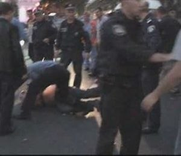
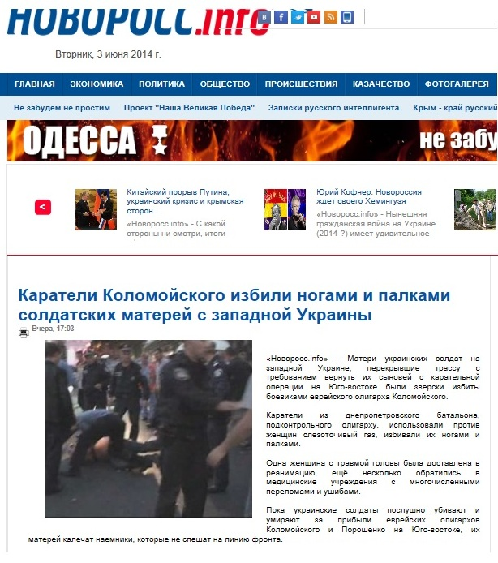
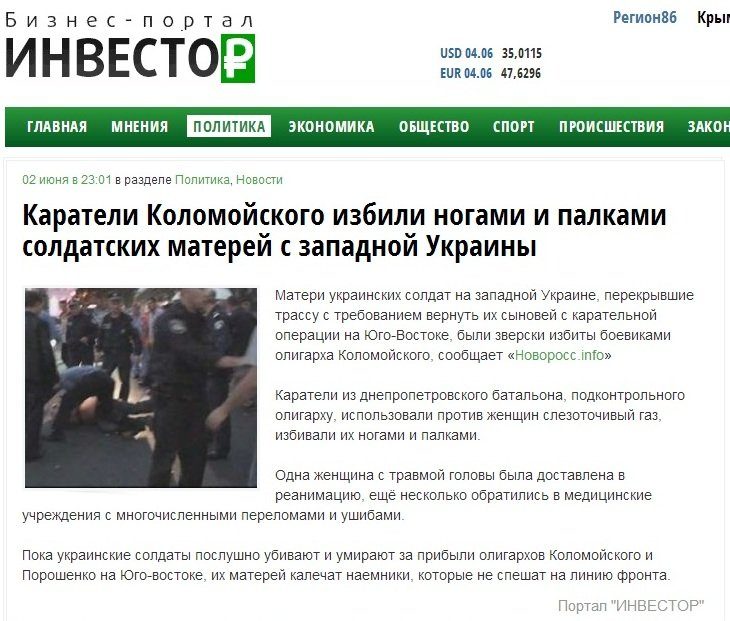
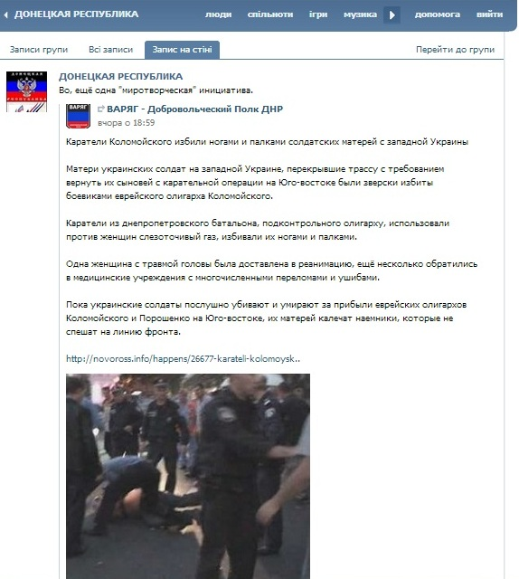
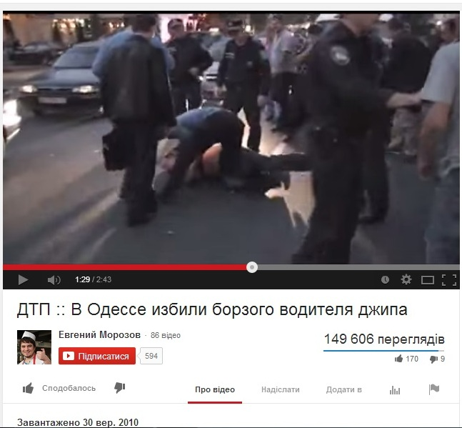
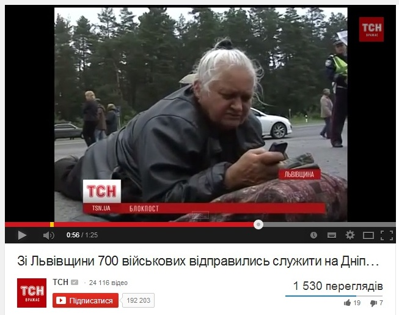

Фейк: Каратели Коломойского избили ногами и палками солдатских матерей из Западной Украины
2 июня на портале Новоросс.info появилась новость о том, что «каратели Коломойского» избили ногами и палками матерей солдат из Западной Украины, которые перекрыли трассу с требованием вернуть их сыновей с карательной операции на Юго-Востока.По утверждению Новоросс.info «каратели из днепропетровского батальона» будто бы использовали против женщин слезоточивый газ, одна женщина с травмой головы была доставлена в реанимацию, ещё несколько обратились в медицинские учреждения с многочисленными переломами и ушибами.

Эту новость перепубликовали множество новостных сайтов, блогов и сообществ в соцсетях.


Однако эта новость не соответствует действительности.Для иллюстрации был использован кадр видеозаписи, сделанной еще в 2010 году в Одессе — тогда прохожие избили водителя, сбившего женщину на тротуаре.



Основой для фейковой новости стала реальная история о том, что родители мобилизованных солдат из Львовской области на протяжении двух дней блокировали выезд из воинской части.Родители боялись отпускать своих сыновей служить в Днепропетровскую область.Несколько матерей ложились на дорогу, чтобы перекрыть выезд солдатам.Но сами солдаты, которые хотят служить, прорвали родительский блокпост и уехали.Никто не пострадал.То есть, в этом конфликте было всего две стороны: солдаты и их родители.«Каратели» или «боевики» возле воинской части не были замечены.В новости от Новоросс.info есть еще одно фейковое утверждение: будто бы матери просили, чтобы их детей вернули с Юго-востоке страны, а на самом деле солдаты еще находились во Львовской области, а матери не хотели их отпускать.Подробности – в сюжете ТСН.
Posted On: 2014-06-02T21:00:00
Content Date: 2014-06-02
Download Date: 2021-07-16
Document ID: L0C04FCT4